Soluzioni Assicurative SAS
Recap e audit del gestionale
Aggiornato al 18 ottobre 2026 · Stato del gestionale locale R4 Insurance
Riferimento: le task del cliente riportate in chat e le successive precisazioni. Questo documento riepiloga ciò che è utilizzabile, le verifiche svolte e le funzioni ancora da completare.
Modifiche concluse
Condizioni provvigionali nelle agenzie: dalla scheda agenzia l’admin configura compagnia collegata, rami e sottorami con checkbox, base di calcolo, aliquote distinte di nuova emissione e rinnovo, periodo di validità e note. Ogni voce è autonoma: il ramo senza sottoramo specificato non estende le proprie percentuali ai sottorami. I campi sconosciuti restano da definire; zero indica invece una percentuale nulla. Nessuna aliquota fittizia è stata inserita nel database locale.
Solo l’admin può creare, revisionare o annullare le condizioni. Ogni revisione conserva la versione precedente; revisione e annullamento richiedono una motivazione e sono registrati. Sono controllate sovrapposizioni, collegamenti al catalogo e conservazione dello storico. Le tabelle hanno filtri ed esportazioni Excel/PDF. La maturazione rimane da definire con il mandante: questa configurazione non genera ancora provvigioni maturate, incassate o guadagni nei report.
Fine lavorazione e correzioni: “Chiudi lavorazione” registra data e operatore senza cambiare lo stato del contratto. Come richiesto nelle task, il blocco delle modifiche per gli operatori scatta alla mezzanotte successiva, nel fuso del gestionale, anche per una polizza attiva. Nello stesso giorno restano le autorizzazioni ordinarie. L’admin può correggere indicando il motivo; un errore può essere segnalato dalla scheda con notifica interna agli admin, storico ed esito comunicato al richiedente.
Preventivi prima della stipula: una pratica raccoglie richieste e risposte delle compagnie. L’operatore può inviare la richiesta dal gestionale, scegliendo compagnia, oggetto, testo e più PDF. Prima dell’invio controlla l’anteprima e conferma esplicitamente. Nobis ed EUROPE ASSISTANCE precedono le altre compagnie; ogni messaggio ha un solo destinatario. Le altre compagnie si sbloccano dopo gli invii prioritari confermati o dopo la registrazione delle proposte prioritarie già ricevute fuori dal gestionale con i relativi PDF. La sola bozza o il semplice contatto manuale non confermano un invio.
Il preventivo ricevuto si carica nella pratica; l’approvazione del cliente rimane una registrazione interna con prova allegata. Il preventivo approvato trasferisce compagnia, prodotto, date, premio e frazionamento nella nuova polizza, conservando i documenti. Sono disponibili storico degli invii, filtri per compagnia, stato e mese, Excel/PDF e registro attività. Le API delle compagnie e la lettura automatica delle risposte non sono incluse.
Titoli, quietanze e incassi: registro autonomo con filtri ed esportazioni, generazione dei titoli secondo il frazionamento dopo un’anteprima, inserimento manuale, giacenze, incassi parziali, pagamenti diretti alla compagnia o ad altra agenzia e storni motivati. Ogni movimento conserva metodo effettivo, destinatario, consulente e documenti. Le quietanze emesse dalla compagnia possono essere allegate in PDF multipli; il gestionale non produce una quietanza ufficiale della compagnia.
Copertura e rinnovi: la copertura registrata avanza solo sui periodi consecutivi interamente incassati, senza saltare rate insolute. Il rinnovo richiede controllo e conferma, genera i titoli del nuovo periodo e conserva quelli precedenti. Gli importi sono calcolati in centesimi, con gestione del resto sull’ultima rata; periodi non allineati o importi incoerenti richiedono l’inserimento dei titoli secondo i documenti della compagnia.
Comunicazioni cumulative dall’applicazione: selezione delle polizze per periodo e agenzia, controllo del destinatario e del testo completo, conferma esplicita e invio di un solo messaggio per agenzia. Sono presenti storico, filtri, esportazioni e registro delle operazioni.
La nuova scheda Titoli e incassi nelle Comunicazioni prepara riepiloghi cumulativi dei movimenti selezionati, compresi quelli diretti a compagnie o altre agenzie, con modalità di pagamento e periodo del titolo. Il riepilogo distingue acconti e saldo tramite incassato e residuo. Gli allegati privati del cliente non vengono inviati automaticamente. Uno storno successivo a un invio non modifica l’email già inviata e non invia automaticamente una rettifica.
La configurazione della casella è riservata all’admin in Impostazioni → Email. La password viene conservata cifrata e non viene riproposta nelle pagine o nei messaggi di errore. La connessione richiede SMTP autenticato con TLS.
Da configurare: la casella reale non è stata ancora inserita. Nel database mancano anche gli indirizzi email di Nobis ed EUROPE ASSISTANCE: occorrono gli indirizzi operativi confermati dall’agenzia. Vanno completati quelli delle altre compagnie e delle agenzie destinatarie. Nessuna email reale è stata inviata durante il collaudo. Il salvataggio delle impostazioni non certifica il collegamento al fornitore di posta.
Polizze inserite oggi: la dashboard usa la data di apertura/inserimento, dalle 00:00 alle 23:59 nel fuso del gestionale. Include gli stati Attiva e Rinnovata soltanto se la scadenza non è trascorsa. Esclude Sospesa, Annullata, Scaduta, Sostituita, Cessata e Da verificare, oltre ai caricamenti storici Excel. Mostra il premio totale di polizza in euro; se manca, mostra “Non indicato”. Non lo sostituisce con il premio rata. Una decorrenza futura rimane distinta dall’apertura fatta oggi.
Notifiche: il menu riprende colori personali, intestazioni, bordi e hover del gestionale; è stato controllato anche con tema scuro e su schermo stretto. Le notifiche sulle scadenze rispettano la visibilità del cliente.
Permessi: una sessione già aperta viene revocata quando l’utente è disattivato. La cancellazione di polizze e documenti registrati di cliente/polizza è riservata all’admin; una polizza collegata a comunicazioni, documenti o altri storici deve essere conservata. Gli avvisi non possono indirizzare verso siti esterni.
Moduli e controllo RCA: aggiornamento del 18 ottobre
Le schede cliente e polizza includono Moduli e firme. L’admin gestisce i modelli in Impostazioni → Modelli documentali, con anteprima PDF, approvazione esplicita, versioni e ritiro. I moduli compilati e i file firmati restano collegati sia al cliente sia alla polizza, con storico protetto.
I file firmati si caricano anche insieme. Ogni versione indica firmatario, qualifica, data, operatore e motivazione; il controllo successivo delle firme è manuale. La sola ricezione di un file non vale come consenso e non autentica una firma. Le modifiche contrattuali segnalano la necessità di nuovi moduli; annotazioni interne e pagamenti non invalidano da soli il fascicolo.
Testi ancora da approvare: i quattro vecchi allegati e la ricevuta di consegna sono conservati come modelli precedenti. Coerenza e consenso elettronico sono bozze. Nessuno è stato abilitato automaticamente. Il file fornito non contiene i testi completi dei MUP correnti, dell’informativa privacy, del mandato e del questionario esigenze. I testi e i dati dell’intermediario devono essere verificati dall’agenzia; il gestionale consente di registrarne le versioni approvate.
In Polizza → Verifica RCA l’operatore apre il servizio ufficiale del Portale dell’Automobilista, effettua la ricerca e registra l’esito con eventuali prove multiple. Non sono state inviate targhe al portale durante il collaudo. L’esito riguarda il veicolo al momento del controllo, non certifica l’incasso né la validità dello specifico contratto nel gestionale.
Superati 236 test automatici e 3.977 asserzioni; dopo l’ampliamento dello spazio per i documenti cifrati sono passati nuovamente i 13 test mirati. Quattro flussi browser e 36 viste desktop/mobile non mostrano errori JavaScript, richieste esterne, campi visibili senza etichetta o sbordamenti orizzontali della pagina. Sono stati controllati visivamente i layout e 11 PDF per 23 pagine. L’audit PHP del 18 ottobre non riporta avvisi o pacchetti abbandonati; restano i limiti frontend descritti sotto.
Le nuove strutture sono presenti in r4_insurance e nove pagine reali rispondono correttamente. Clienti, polizze, cataloghi, provvigioni, titoli, incassi, preventivi e allegati preesistenti risultano invariati: 50 clienti e 50 polizze. Nessun fascicolo firmato o controllo RCA fittizio è stato inserito nel database locale.
Preparazione dei moduli su desktop
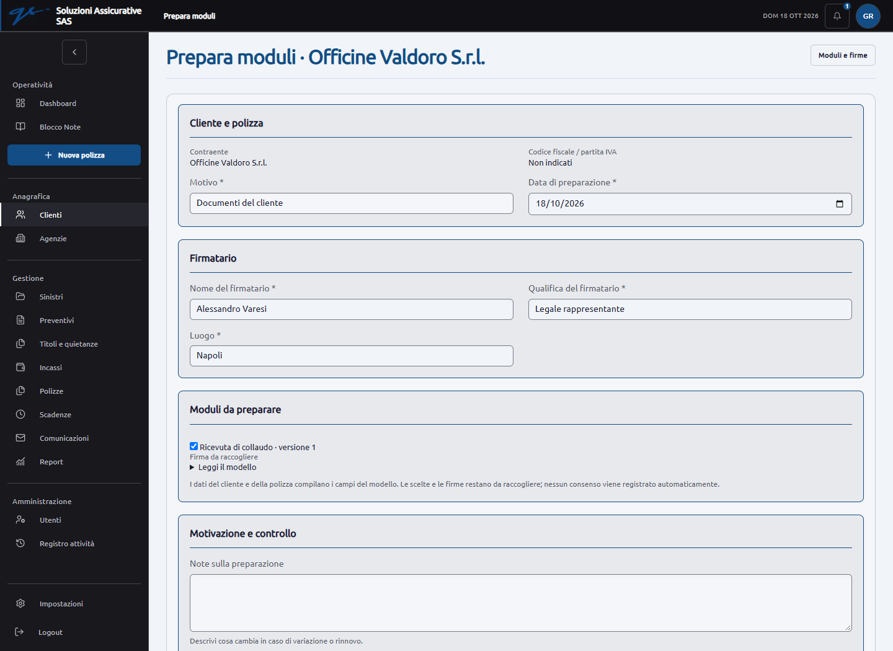
Allegati multipli e controllo RCA su telefono
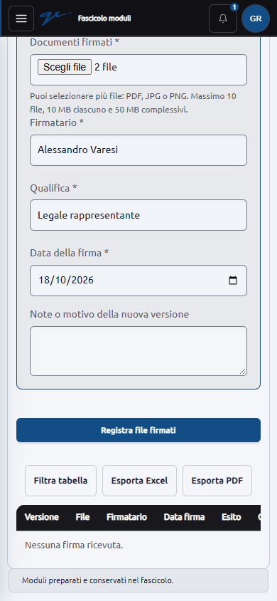
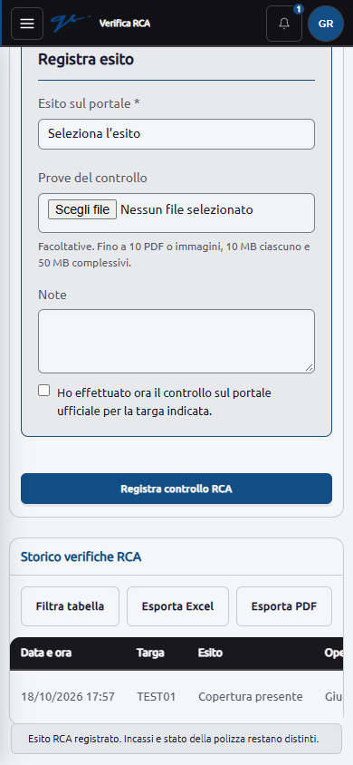
Sinistri: stati, documenti e attività
La nuova pagina Gestione → Sinistri si apre anche dal cliente e dalla polizza. L'operatore cerca e seleziona il contratto; la scheda presenta cliente, agenzia, compagnia, ramo/sottoramo e targa, oltre a numero del sinistro, date, descrizione e assegnatario. I riferimenti originali della polizza sono conservati all'apertura.
Stati approvati: Aperto, In attesa documenti, In gestione presso compagnia/agenzia, In attesa liquidazione, Chiuso con liquidazione, Chiuso senza liquidazione, Annullato per errore. I cambi richiedono motivazione. Annullamento della pratica e riapertura sono riservati all'admin; la chiusura non modifica polizza, titoli o incassi.
Attività e promemoria: l'operatore indica attività e data, registra il completamento oppure riprogramma o annulla con motivazione. Avvisi interni all'assegnatario e agli admin 3 giorni prima e il giorno previsto; permanenza negli arretrati fino alla risoluzione. Sono gestiti anche inserimenti già in ritardo. La chiusura annulla le attività ancora aperte senza cancellarle; la riapertura richiede di programmare eventuali nuove attività.
Documenti PDF/JPG/PNG caricabili insieme, con accesso riservato e consultazione dal cliente e dalla polizza. Note, modifiche e allegati conservano operatore, data e storico. Gli originali sono protetti dalle cancellazioni e sostituzioni generiche. Descrizioni, attività e dettagli storici sono cifrati nel database; il registro globale conserva operazione e riferimenti, senza duplicare il testo sensibile.
Filtri per cliente/polizza/sinistro, agenzia, compagnia, ramo/sottoramo, operatore, stato, periodo e attività. Le tabelle includono Excel/PDF. La dashboard mostra attività arretrate e dei prossimi 3 giorni. Lo scadenzario rimanda alle attività dei sinistri.
Verifiche: superati 251 test automatici e 4.267 asserzioni nella suite completa, compresi 15 nuovi test sui sinistri. Controllati autorizzazioni, revoca dell'accesso, allegati, cifratura, modifiche concorrenti, duplicati, avvisi, riapertura, filtri e conservazione delle pratiche durante l'unificazione dei clienti. Il collaudo nel browser comprende creazione, allegati multipli, riprogrammazione, note, modifica, chiusura, riapertura, arretrati, esportazioni e accesso in sola lettura.
Controllate 52 viste dei flussi e altre 8 viste mirate su notifiche, storico compatto ed esportazioni finali: nessun errore JavaScript, nessuna richiesta esterna e nessuno sbordamento della pagina. Dopo la rifinitura sono passati nuovamente i 15 test dei sinistri (290 asserzioni) e quattro test dei filtri tabellari. I due Excel conservano tutte le righe e valori testuali; i due PDF sono stati renderizzati e controllati, senza testo fuori pagina. Corretta anche la spaziatura tra i campi esportati e la distribuzione delle colonne.
La migrazione è applicata a r4_insurance. Otto pagine reali rispondono correttamente; i confronti confermano 50 clienti e 50 polizze invariati, insieme a cataloghi, documenti, provvigioni, preventivi e movimenti preesistenti. Nessun sinistro fittizio è stato inserito nel database locale.
Gli stati sono operativi: la registrazione di un sinistro o di una chiusura con liquidazione non certifica copertura né pagamento. Gli avvisi sono interni; l'attivazione continuativa dello scheduler deve essere verificata sul server finale.
Sinistro e attività su desktop
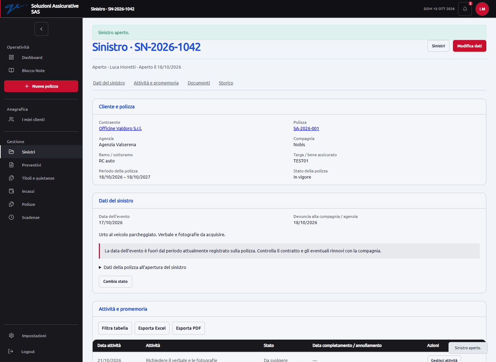
Gestione attività e storico su smartphone
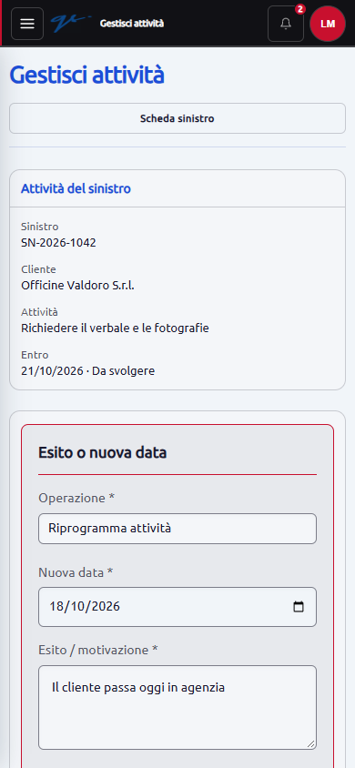
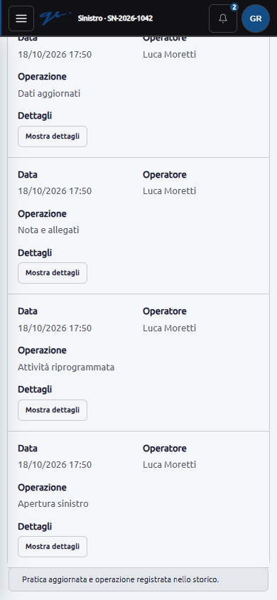
Task del cliente: cosa si può spuntare
“Pronto” indica una funzione presente e verificata nel perimetro descritto. “Parziale” indica che esiste una base utilizzabile ma manca una parte della richiesta; non va considerata chiusa.
| Richiesta | Stato | Cosa è presente e cosa manca |
|---|---|---|
| Clienti persone e aziende, campi Excel | Pronto | Anagrafica, identificativi, contatti, referenti, relazioni, note, veicoli/targhe e più polizze per cliente. Ricerca e creazione del cliente anche dalla nuova polizza. |
| Rami, sottorami e prodotto | Pronto nel catalogo | Livelli separati, tab nel cliente, filtri di portafoglio e catalogo modificabile. Le voci dubbie restano indicate da verificare, senza riclassificazioni arbitrarie. |
| Compagnie, agenzie e collegamenti | Pronto per le anagrafiche | Compagnie e agenzie distinte, mandati con più compagnie per agenzia, gerarchia agenzie/subagenzie, menu coerenti e protezione dei collegamenti in uso. Il reset ha conservato il catalogo. |
| Nuova polizza completa | Pronto | Ricerca/creazione del contraente, ramo/sottoramo, prodotto, compagnia, agenzia, bene o veicolo, date, premio, stato, frazionamento, metodo abituale, CU e classe interna, ad horas e PDF multipli. Una nuova stipula richiede un preventivo approvato con prova allegata; l’admin può registrare una polizza già esistente indicando il motivo. |
| Stati definiti e ricerca | Pronto | Attiva, Rinnovata, Scaduta, Sospesa, Sostituita, Annullata, Cessata e Da verificare. Decorrenza futura e scadenza trascorsa derivano dalle date; il pagamento è un campo distinto. |
| Tacito rinnovo predefinito Sì | Pronto | Valore iniziale nella nuova polizza. Non genera automaticamente un rinnovo o un titolo. |
| PDF e allegati multipli | Pronto | Caricamento dal cliente e dalla polizza, limiti per file, accesso riservato e collegamenti controllati. Sostituzione di versione e risposta a una singola richiesta documentale restano operazioni su un documento. |
| Validità documento d’identità | Pronto con conferma | Carta elettronica, cartacea e patente. Lettura locale della scadenza da PDF/immagine e conferma manuale: valido, non valido con data, oppure “Da verificare, data di scadenza non leggibile”. Il riconoscimento della data non autentica il documento. |
| Moduli da firmare a emissione o variazione | Funzione pronta; testi da revisionare | Modelli per cliente/polizza e ramo/sottoramo, generazione PDF dai dati registrati, allegati firmati multipli, controllo manuale delle firme e storico conservato. Cambi contrattuali segnalano moduli da ripreparare. I sette modelli forniti restano cinque precedenti e due bozze: nessuna approvazione automatica. |
| Controllo RCA tramite targa | Pronto, con controllo manuale | Collegamento al servizio ufficiale, registrazione di esito, data/ora, operatore, note e prove multiple. Non verifica l’incasso o altre garanzie e non modifica lo stato della polizza. |
| Scadenze e avvisi 15 giorni prima | Pronto nel software | Contratti, documenti, richieste e titoli da incassare; frazionamento, residui, giacenze, filtri e promemoria interni entro 15 giorni, anche in dashboard. I titoli saldati o annullati sono esclusi dai promemoria. Va verificata l’attivazione continuativa dello scheduler sul server finale. |
| Previsione del mese successivo | Pronto | Intervalli di scadenza e report mensili per individuare contratti e titoli da seguire. Il rinnovo è disponibile dalla polizza, con anteprima e conferma dei nuovi titoli; non viene eseguito senza controllo dell’operatore. |
| Titoli, giacenze e quietanze semestrali | Pronto | Registro autonomo, generazione annuale/semestrale e altri frazionamenti supportati, inserimento manuale, giacenze, annullamento motivato e PDF multipli delle quietanze ricevute. Non genera documenti ufficiali al posto della compagnia. |
| Copertura aggiornata dai titoli e rinnovi | Pronto | La copertura registrata segue i periodi consecutivi interamente incassati; un pagamento parziale o una rata insoluta non viene superato. Storni e annullamenti ricalcolano la copertura. Il rinnovo conserva lo storico e crea i titoli del nuovo periodo. |
| Premio dal preventivo scelto | Pronto | Richieste prioritarie a Nobis ed EUROPE ASSISTANCE, poi alle altre compagnie; documenti ricevuti, presentazione al cliente e approvazione interna con prova allegata. La conversione riporta automaticamente i dati del preventivo e impedisce una seconda stipula dallo stesso preventivo. |
| Email di richiesta preventivo | Pronto nel software; casella e destinatari da configurare | Scelta della compagnia, testo modificabile, PDF multipli, anteprima e conferma dell’operatore. Priorità controllate, invii separati, storico filtrabile ed esportabile, allegati conservati e blocco dei duplicati. Resta possibile registrare le richieste già effettuate fuori dal gestionale. |
| Pagina Incassi e pagamenti diretti | Pronto | Movimenti filtrabili per periodo, contraente, consulente, compagnia, agenzia, metodo, stato e documento. Acconti, saldi e pagamenti diretti sono registrati; i totali distinguono somme ricevute dalla nostra agenzia e pagamenti a terzi. Storni motivati senza cancellare lo storico. |
| Modalità di pagamento di ogni titolo | Pronto | Metodo previsto sul titolo e metodo effettivo su ogni incasso, con destinatario coerente. Le comunicazioni degli incassi riportano il metodo effettivo, anche per pagamenti diretti. |
| Comunicazioni cumulative e ad horas | Pronto nel software; casella da configurare | Filtri per giorno, 15/30 giorni, mese, intervallo, agenzia e compagnia; selezione, controllo, conferma e invio diretto con storico. Ad horas è evidenziato e resta sotto controllo dell’operatore. Nessun invio automatico serale senza revisione. |
| Invio di titoli coperti e incassi ad altre agenzie | Pronto nel software; casella da configurare | Selezione dei movimenti per agenzia e periodo, anteprima di destinatario e testo, conferma, invio cumulativo e storico. Sono riportati titolo, periodo, importo, metodo effettivo, destinatario del pagamento e residuo. Acconti e saldi restano distinguibili; nessun documento privato viene allegato automaticamente. |
| Report mensili e guadagni | Parziale | Filtri per mese, date, ramo, sottoramo, compagnia e agenzia; totale premi e accesso agli incassi mensili. La configurazione delle aliquote è disponibile, ma premi e incassi non sono guadagni: il calcolo delle provvigioni richiede ancora le regole economiche confermate. |
| Aliquote per agenzia, compagnia, ramo e sottoramo | Configurazione pronta; calcoli da completare | Tabella con checkbox, base contrattuale per voce, aliquote separate per emissione e rinnovo, decorrenza, termine, storico e registro attività. Modifica riservata all’admin, filtri ed Excel/PDF. Le percentuali reali vanno inserite; la maturazione resta da definire e non produce importi automatici. |
| Filtri avanzati ed Excel/PDF | Pronto sulle tabelle presenti | Comandi visibili di filtro ed esportazione; conservazione dei filtri e raccolta delle pagine dell’elenco. Lo storico email è incluso. Non equivale a una prova di esportazione su 40.000 polizze. |
| Dashboard operativa e attività admin | Pronto | Situazione portafoglio, polizze aperte oggi con premio, scadenze, richieste e attività recenti a destra. Il registro conserva accessi e modifiche tracciate; non registra ogni semplice visualizzazione/click. |
| Multiutente e limiti dei dipendenti | Parziale | Autenticazione, assegnazione clienti, visibilità e attività registrate. Creazione/annullamento titoli, rinnovi, storni e invii cumulativi riservati all’admin; gli operatori autorizzati registrano incassi sui clienti visibili. Documenti originali di preventivi, approvazioni e movimenti protetti dalle normali modifiche/cancellazioni. Resta da uniformare il divieto di cancellazione sui record secondari già presenti, come contatti e veicoli. |
| Blocco modifiche dal giorno dopo la chiusura | Pronto | Chiusura esplicita della lavorazione/emissione, distinta dallo stato contrattuale. Dalla mezzanotte successiva solo l’admin modifica la polizza, anche se attiva; deve indicare il motivo. L’operatore può segnalare un errore con notifica interna agli admin, storico ed esito. Il normale salvataggio o un secondo clic non azzerano né spostano la chiusura. |
| Sinistri | Pronto nel perimetro approvato | Pagina operativa, cliente e polizza, stati concordati, allegati multipli, storico, operatore, attività e promemoria interni a 3 giorni, arretrati, filtri ed Excel/PDF. Chiusura, annullamento e riapertura conservano lo storico; non generano incassi. |
| API NOBIS, Europ Assistance e generiche | Da realizzare | Non risultano connettori assicurativi operativi. Occorrono documentazione, accessi e autorizzazioni delle compagnie. |
| Comunicazioni da quotazione a fatturazione | Parziale | Richieste di preventivo inviate dal gestionale e invii cumulativi per polizze e incassi, sempre dopo controllo. Risposte delle compagnie e approvazione del cliente registrate internamente con PDF. Mancano collegamenti API, acquisizione automatica delle risposte e fatturazione, rimossa in precedenza su richiesta. |
| 4.000 polizze/anno, conservazione 10 anni | Da verificare e completare | Storici e relazioni vengono preservati; il database di collaudo contiene 50 polizze. Non sono stati eseguiti un carico di 40.000 polizze, una prova di ripristino completa o una verifica formale della conservazione decennale. |
| Inserimento manuale di ogni elemento | Pronto per i moduli presenti | Clienti, agenzie, compagnie, catalogo, polizze, documenti, richieste e risposte ai preventivi, titoli e incassi. La registrazione di una polizza preesistente senza nuovo preventivo è riservata all’admin e richiede una motivazione. Disponibili anche apertura manuale del sinistro e registrazione delle attività. |
| Marchio, favicon, login e tema personale | Pronto | Firma GS, denominazione Soluzioni Assicurative SAS, favicon su cerchio bianco, login, colori per utente, hover e bordi dei form. Il login usa l’aspetto ricordato dal browser; non può conoscere l’utente prima dell’accesso. |
| Pulizia e dati di collaudo | Pronto per il perimetro eseguito | Sidebar riorganizzata, moduli ritirati e Team rimossi; 50 clienti e 50 polizze con nomi di fantasia e numeri SA-2026-001–050. Restano 16 agenzie, 20 compagnie, 34 rami e 44 sottorami del catalogo. |
Risultati dell’audit
Flusso email e sicurezza applicativa
- Il primo pulsante prepara il controllo; il secondo invia soltanto dopo una conferma esplicita. L’email contiene esattamente il testo mostrato, con un solo destinatario e senza copie nascoste.
- Se cambiano polizza, cliente, destinatario o mittente, il controllo precedente non può essere riutilizzato. Il controllo scade dopo 30 minuti.
- Invii ripetuti e selezioni sovrapposte della stessa versione di polizza sono bloccati. Se l’esito SMTP è incerto, il sistema non riprova automaticamente: serve la verifica dell’operatore presso il servizio di posta.
- “Inviata al server di posta” indica l’accettazione SMTP, non certifica l’arrivo nella casella del destinatario.
- Controllati permessi admin, visibilità dei clienti, identificativi incrociati, validazione dei file, download privati, mancata esposizione della password SMTP e protezione delle richieste. Risolti revoca delle sessioni inattive, cancellazioni non autorizzate e destinazioni esterne nelle notifiche.
- La nuova comunicazione degli incassi conserva i valori controllati e impedisce di comunicare due volte lo stesso movimento allo stesso destinatario. Uno storno o una variazione intervenuti prima dell’invio invalidano la revisione. L’esito SMTP incerto resta bloccato finché l’operatore non lo risolve.
- Incassi limitati al residuo, richieste ripetute riconosciute, aggiornamenti finanziari eseguiti in transazione e collegamenti controllati. Il totale incassato non può essere modificato dal normale form della polizza. I dati economici derivati da un preventivo approvato o collegati a titoli non possono essere riscritti dal form generico.
Verifiche automatiche e database
251 test automatici e 4.267 asserzioni superati nella suite completa, inclusi i sinistri. La nuova compilazione del frontend è riuscita ed è stata usata nel collaudo.
Oltre alle verifiche precedenti, controllati priorità delle richieste, approvazione documentata, premio trasferito dal preventivo, doppia conversione, ruoli e visibilità, frazionamenti, arrotondamenti, fine mese/anno bisestile, duplicati, sovrapposizioni, acconti, saldo, pagamento diretto, storno, copertura senza salti, rinnovo, avvisi entro 15 giorni e comunicazioni cumulative dei movimenti. Le verifiche della fine lavorazione coprono il passaggio a mezzanotte, polizza attiva, tentativi di spostare la chiusura, dati cambiati durante il controllo, segnalazioni duplicate, correzioni motivate, esiti e revoca della visibilità delle notifiche.
I nuovi test delle email coprono revisione obbligatoria, priorità, proposte già ricevute fuori dal gestionale, allegati multipli, contenuti cifrati, documenti cambiati o mancanti, limiti di caricamento, autorizzazioni, scadenza della revisione, dati variati, SMTP assente, invii duplicati ed esiti incerti. Verificata anche la costruzione del messaggio con un solo destinatario e più PDF, senza connessioni esterne. Le prove usano database separati.
Sul database locale sono state applicate le migrazioni aggiuntive e impostate le due compagnie prioritarie già presenti, senza unire la distinta voce EUROPE. Il confronto dei dati conferma 50 clienti e 50 polizze invariati. La nuova migrazione dello storico email è applicata: cinque pagine rispondono correttamente, cataloghi e documenti preesistenti restano invariati e le registrazioni temporanee sono state annullate. Nessun invio reale. Sono conservati anche i precedenti controlli della fine lavorazione, delle 10 pagine operative e delle 24 pagine dell’audit generale.
Provvigioni: aggiunti 12 test su autorizzazioni, mandati, percentuali esatte, campi mancanti, date, sovrapposizioni, revisioni e annullamenti motivati, conservazione dello storico, filtri e moduli. La migrazione dedicata è applicata a r4_insurance; cinque pagine rispondono correttamente. Clienti, polizze, cataloghi, titoli, incassi e preventivi preesistenti sono invariati. Le configurazioni temporanee sono state annullate: nessuna aliquota fittizia nel database locale e nessun calcolo economico attivato.
Layout, responsive e interazioni
Controllo Chromium nascosto su desktop e telefono. Il nuovo invio dei preventivi è stato percorso in tre flussi completi: priorità e invio controllato con PDF multipli, storico con filtri ed Excel/PDF, risposta e approvazione fino alla polizza. 20 nuove viste acquisite, nessun errore JavaScript, nessuna richiesta esterna e nessun campo visibile senza etichetta nel controllo automatico. I messaggi di prova usano un trasporto locale senza consegna esterna.
Rimangono consultabili le precedenti 68 viste e cinque flussi su preventivi, frazionamenti, incassi, rinnovi e comunicazioni cumulative, oltre all’audit di 61 viste su anagrafiche, notifiche e impostazioni. Le tabelle larghe scorrono all’interno del proprio riquadro sul telefono. I moduli sono divisi per argomento, con pulsanti raggiungibili e input compatti; sono state controllate anche le parti finali dei moduli lunghi. Il pannello delle notifiche segue il tema personale.
Il precedente controllo visivo ha rilevato piccoli residui di stile nelle pagine ereditate, per esempio Utenti, Registro attività e Blocco note, da uniformare nella successiva pulizia grafica. L’emulazione Chromium non sostituisce un controllo su dispositivi fisici e Safari.
Per la fine lavorazione sono state acquisite altre 14 viste desktop/mobile: chiusura, blocco il giorno successivo, segnalazione, notifica admin, correzione motivata ed esito all’operatore. Nessun errore JavaScript, richiesta esterna o campo visibile privo di etichetta nel controllo; nessuna email reale.
Le provvigioni aggiungono tre flussi completi e 20 viste desktop/mobile: configurazione per mandato e voce, revisione con storico, filtri ed esportazioni, annullamento motivato e accesso in sola lettura. Nessun errore JavaScript, richiesta esterna, campo visibile senza etichetta o sbordamento orizzontale della pagina nel controllo automatico. Modulo desktop, parte finale del modulo su telefono, filtri su telefono e storico sono stati anche esaminati visivamente. Le percentuali visibili nelle immagini appartengono esclusivamente al database separato di collaudo.
Dipendenze e limiti della verifica
Il controllo ha individuato e risolto 16 avvisi su cinque librerie PHP, con aggiornamenti compatibili: Laravel 13.37.0, Livewire 4.4.7, CommonMark 2.10.3, Flysystem 3.36.0, Symfony HttpFoundation 7.4.21 e Laravel Prompts 0.3.26. L’audit PHP finale non riporta avvisi o pacchetti abbandonati.
Nel frontend restano 9 segnalazioni di pacchetto: 5 alte e 4 moderate, nessuna critica. Sono catene dipendenti da tre problemi principali: esaurimento di risorse nella compilazione dei pattern/CSS e controllo dei buffer in alcune funzioni UUID usate da una dipendenza di ExcelJS. Il conteggio non rappresenta nove vulnerabilità indipendenti.
Le correzioni automatiche proposte includono un cambio di versione principale di Tailwind o una regressione di ExcelJS: occorre un intervento separato con collaudo del layout e delle esportazioni. Non sono state applicate forzature automatiche. Il report non certifica l’assenza di vulnerabilità.
Non provati: consegna con il servizio SMTP reale, OCR su una raccolta rappresentativa di carte e patenti reali, carico pluriennale, ripristino completo e configurazione del server di produzione.
Decisioni e dati mancanti
- Email: indirizzo mittente, servizio e parametri SMTP da inserire nell’area admin; indirizzi operativi delle compagnie, a partire da Nobis ed EUROPE ASSISTANCE, e delle agenzie da completare e confermare.
- Provvigioni: la configurazione è pronta. Occorre confermare la quota spettante a Soluzioni Assicurative, basi e percentuali reali di ogni mandato, dati economici necessari, data che determina l’aliquota applicabile, evento di maturazione e trattamento di rate/acconti, pagamenti diretti, annullamenti e storni. Il premio imponibile non è ancora un dato economico separato. Maturazione e ricezione effettiva della provvigione vanno distinte; gli incassi dei premi già registrati non determinano automaticamente un guadagno.
- Moduli: versioni definitive approvate, campi da compilare e documenti obbligatori per ciascun ramo/sottoramo. I file storici non devono diventare automaticamente informative correnti.
- Ruoli: verificare con il cliente l’assegnazione operativa: attualmente titoli, rinnovi, storni e comunicazioni sono riservati all’admin; gli operatori autorizzati possono registrare incassi sui clienti visibili.
- Integrazioni: accessi e specifiche delle compagnie per i preventivi e le API.
Il prossimo blocco economico è il calcolo delle provvigioni e i relativi report, dopo aver confermato le regole dei mandati. La generazione dei moduli è disponibile dopo l’approvazione esplicita dei relativi testi nelle impostazioni. Prima dell’uso operativo va configurata e collaudata la casella reale.
Evidenze consultabili
- Sinistri: test mirati
- Sinistri: migrazione, conservazione dati e pagine reali
- Sinistri: flussi e viste desktop/mobile
- Sinistri: verifica delle esportazioni
- Esito completo dei 236 test automatici
- Moduli e RCA: 13 test mirati dopo l’allineamento dello schema
- Moduli e RCA: stato del database e nove pagine reali
- Moduli e RCA: quattro flussi e 36 viste desktop/mobile
- Controllo di 11 PDF, per 23 pagine
- Provvigioni: migrazione e controllo del database locale
- Provvigioni: tre flussi e 20 viste desktop/mobile
- Configurazione delle aliquote e modulo su telefono
- Richieste email: migrazione, configurazione e controllo del database locale
- Richieste email: tre flussi e 20 viste desktop/mobile
- Modulo di richiesta preventivo e controllo dell’invio su telefono
- Chiusura lavorazione: migrazione e controllo del database locale
- Chiusura e correzioni: due flussi completi e 14 viste nel browser
- Ultimo controllo del database e delle 10 pagine coinvolte
- Cinque flussi completi e 68 viste nel browser
- Audit precedente: database e 24 pagine, 61 viste e interazioni
- Audit finale delle dipendenze PHP e audit delle dipendenze frontend


Preventivo e approvazione documentata
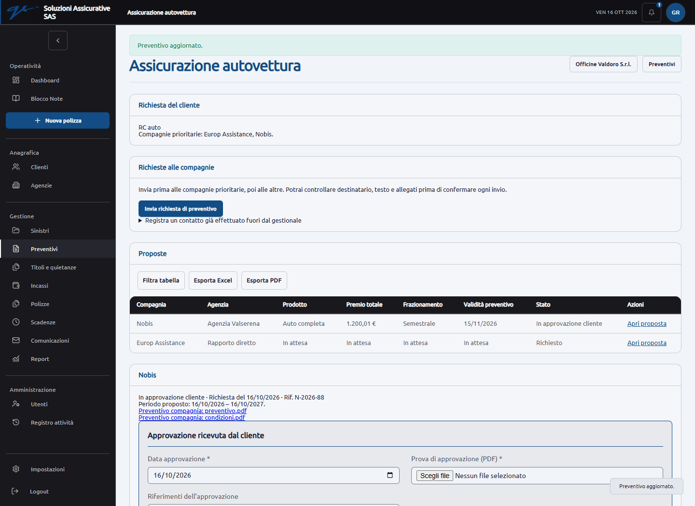
Controllo dell’email cumulativa degli incassi
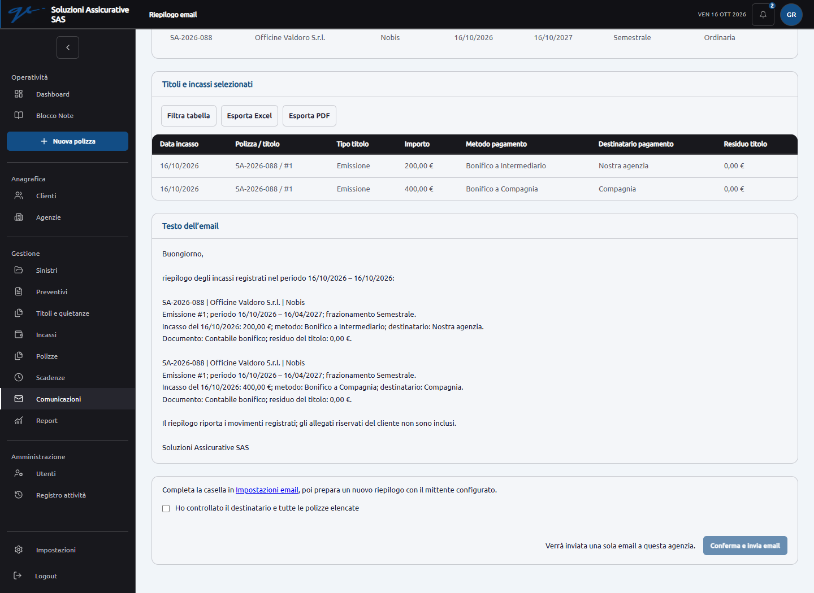
Incassi su telefono
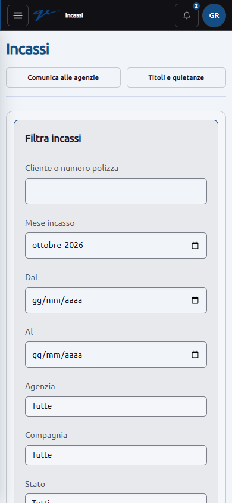
Dashboard e notifiche del precedente audit
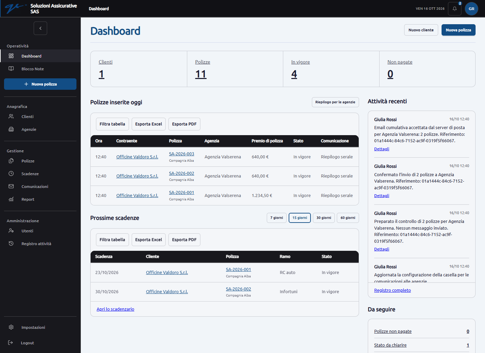
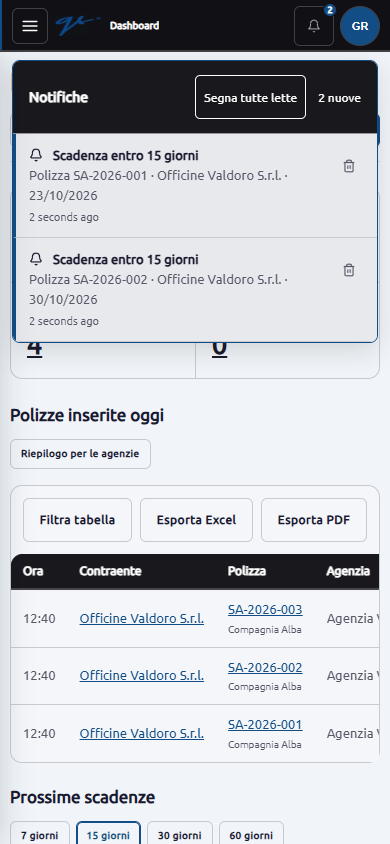
Riferimenti alle correzioni di sicurezza: avviso ufficiale Symfony sui tempi di elaborazione degli header, avviso CommonMark, avviso Livewire.